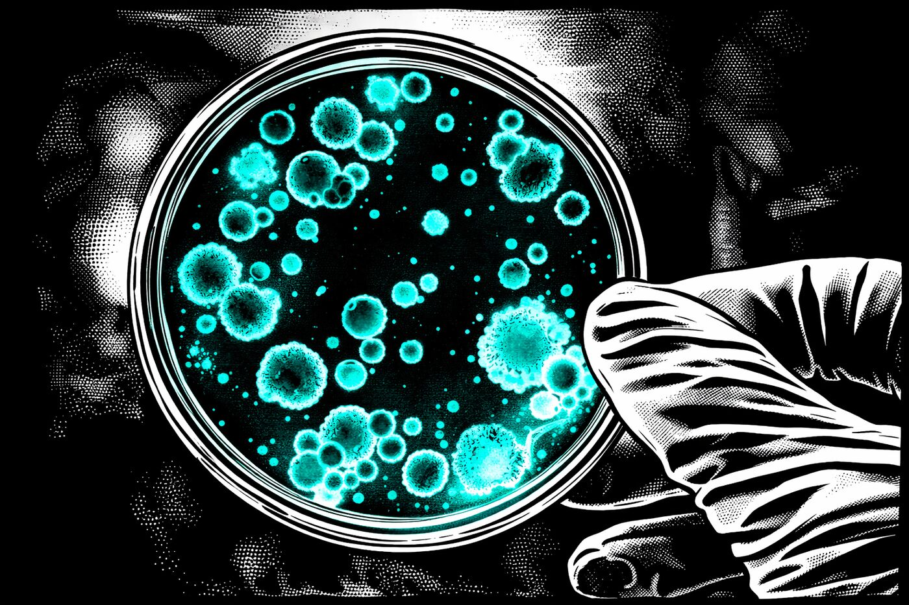
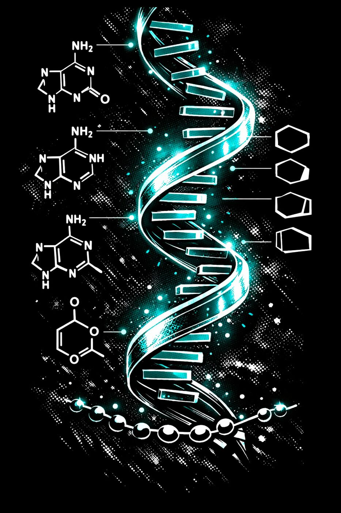
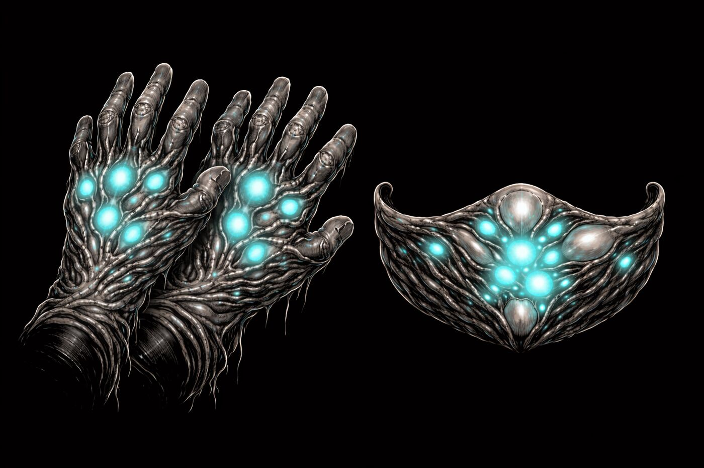
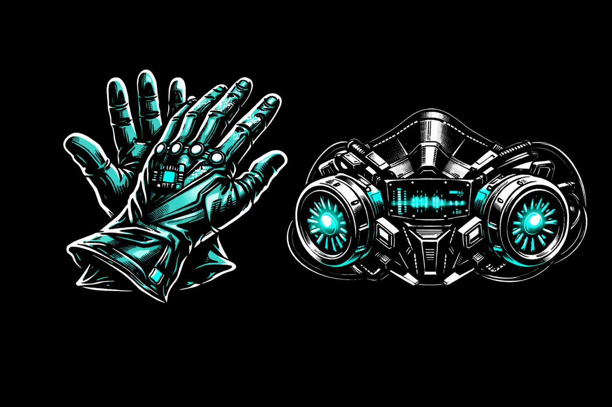
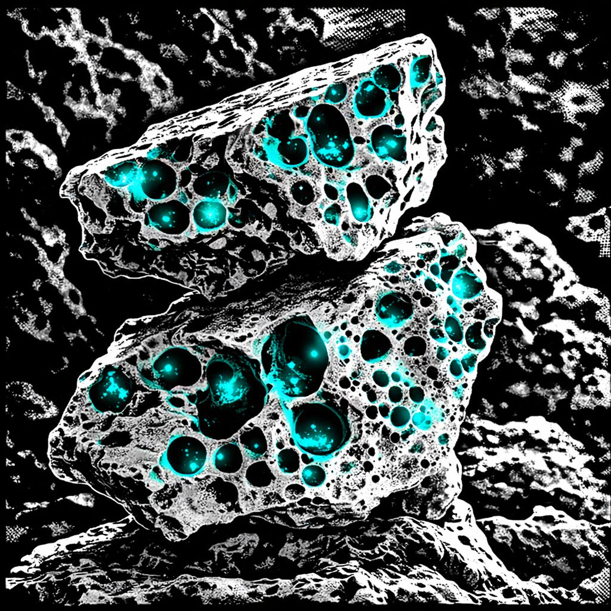
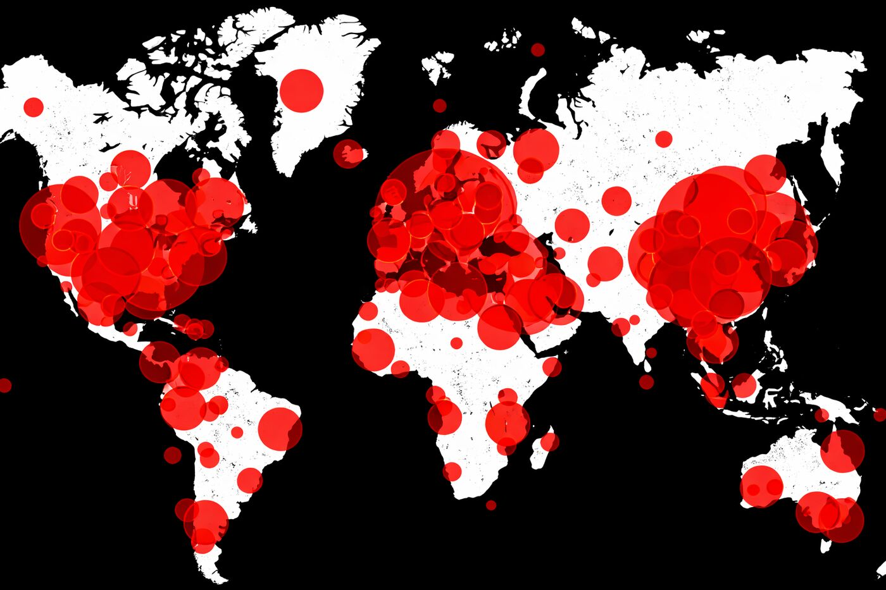
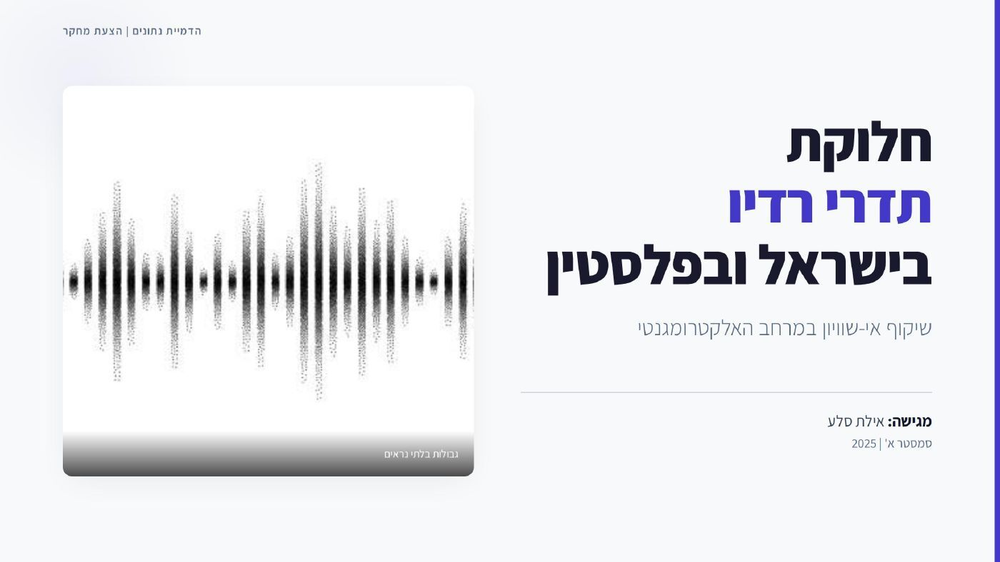
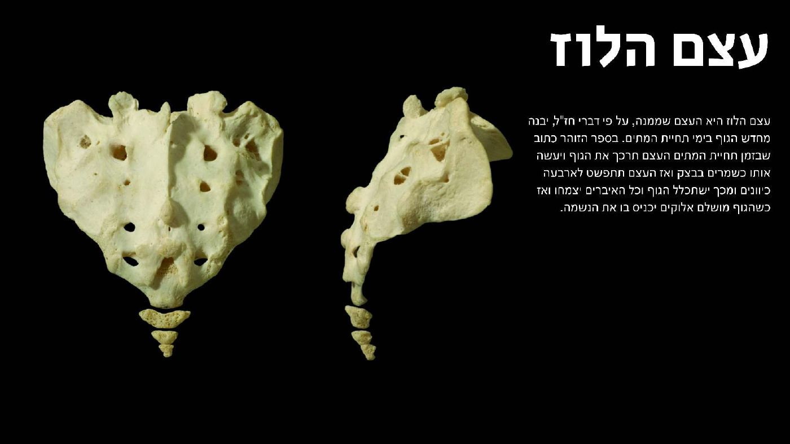

The "LoRA" for Order / Break: what the design is allowed to learn from. For each reference, mark keep or drop. Then press copy my picks at the bottom and paste the result back to Claude. Thumbnails are live screenshots, so they need an internet connection and may take a few seconds. Click a thumbnail to open the site.







